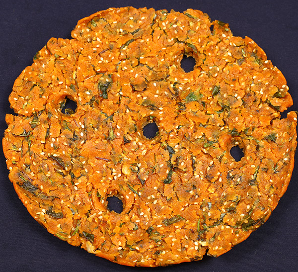

Sarva Pindi
Ingredients:
- 2 cups rice flour
- 1/2 cup chana dal (split Bengal gram), soaked for 2-3 hours and drained
- 2-3 green chilies, finely chopped
- 1 medium-sized onion, finely chopped
- 2 tbsp fresh coriander leaves, finely chopped
- 1/4 cup grated coconut (optional)
- 1 tsp cumin seeds
- 1 tsp sesame seeds
- 1/4 tsp asafoetida (hing)
- Salt to taste
- Water as needed
- 2-3 tbsp oil for frying
 Recipe:
- In a large mixing bowl, combine the rice flour, soaked and drained chana dal, chopped green chilies, chopped onion, chopped coriander leaves, grated coconut (if using), cumin seeds, sesame seeds, asafoetida, and salt. Mix everything well.
- Gradually add water little by little to form a stiff dough. Ensure that the dough is not too soft or too hard. It should be firm enough to hold together but pliable enough to shape into pancakes.
- Heat a non-stick skillet or tawa on medium heat. Meanwhile, take a small portion of the dough and flatten it on a greased banana leaf or parchment paper to form a thin pancake. You can also flatten it directly on your palm, but using a leaf or paper helps in easy transfer to the skillet.
- Once the skillet is hot, carefully transfer the flattened pancake onto it. Drizzle a little oil around the edges of the pancake and a few drops on top.
- Cook the pancake on medium heat until the bottom side turns golden brown and crisp. Flip it over and cook the other side similarly until golden brown and crisp.
- Remove the cooked Sarva Pindi from the skillet and repeat the process with the remaining dough.
- Serve the Sarva Pindi hot with coconut chutney or any other chutney of your choice.